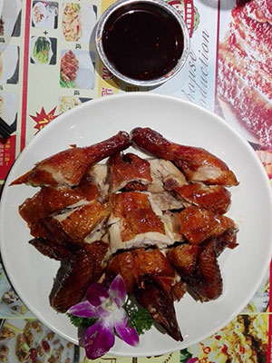
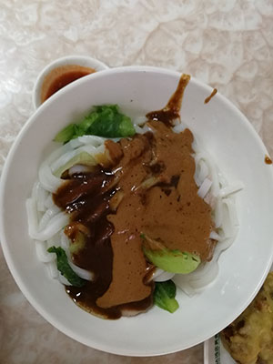

我的前端More>>

吃货天堂More>>
- 坐标：广州市荔湾区西华路(地铁站陈家祠C出口，家具城的16入口可达)
- 腾元生煎、濑粉、还有手工现做芝麻糊，值得吃货们走一遭！

- 坐标：广州市越秀区文明路；广州大学城GOGO新天地三楼
- 文明路，达杨原味炖品，一间小店面，每时都爆满，他家的原只椰子炖鸡特别香；新天地三楼百草堂的烧春鸡滋味也很不错！

- 坐标：广州华威达酒店旁牛庄(公车：国防大厦站下车)
- 一系列的潮汕美食哦！出门在外的潮汕人最想念的味道！牛杂粿条汤、沙茶粿、牛肉丸、春卷、猪脚圈、无米粿......简直人间美味！
生活多娇More>>
我想有一天和你去旅行,去那没有去过的地方，没有行李,没有背包,
不带电脑更不要手机,走一个地方停一个地方。
在我心里最美好的就是和你一起老在路上,
捕捉最后的流星,坐在最高的山顶上,听音乐,聊电影,吃东西....
当日出越过山涧，我未老，你依然。
——《飞屋环游记》
-
- 广州市南沙区珠江入海口
- 海风拂面，风吹浪拍岸，浪花飞溅，远眺，江上行船，惬意、自怡......更有南沙天后宫、蒲州花园、啤酒屋、广州第一滩和游乐场等景点可供游玩。
-
- 广州市番禺区南村镇余荫山房
- 余荫山房为清代举人邬彬的私家花园，以小巧玲珑、布局精细的艺术特色著称，充分表现了古代园林建筑的独特风格和高超的造园艺术。园中亭台楼阁、堂殿轩榭、桥廊堤栏、山山水水尽纳于方圆三百步之中，充分反映了天人合一的文化特色，表现一种人与自然和谐统一的宇宙观。
-
- 广州市番禺区莲花山风景区
- 莲花山原名“石狮头”,是古代石矿场，因采石后留下来的石头似出水芙蓉（莲花）状而得名。远自西汉时期，先民们在此大规模地开采石料，形成悬崖峭壁、奇岩异洞，如莲花石、燕子岩、八仙岩、莲花岩、观音岩、飞鹰岩、南天门、神仙桥等。
-
- 广州市越秀区广州动物园
- 广州动物园共有选自全国和世界各地的哺乳类、爬虫类、鸟类和鱼类等动物 ,其中不少属于世界珍禽异兽。属于国家一类重点保护动物有大熊猫、金丝猴、黑颈鹤等，属于国家二类重点保护动物的有小熊猫、白枕鹤等。广州动物园同时亦是一个植物展示的园地。
-
- 广西壮族自治区桂林市阳朔县
- 阳朔县拥有漓江景区、《印象·刘三姐》、碧莲峰山水园、聚龙潭、蝴蝶泉、刘三姐水上公园、鉴山寺等营业景点15处。
-
- 惠州巽寮湾
- 惠州巽寮湾，是AAAA级国际滨海旅游度假区，“中国旅游名镇”之一。巽寮湾海滩沙质洁白细幼，形如白金，海沙含硅量达99%，世界罕见。海水青翠碧绿，原生态级的水质属国内罕有。海滩属全世界顶级的天然海水浴场。空气负氧离子含量高于三亚，是国内顶级的天然氧吧。
此页面是我参考网站(https://html5up.net/spectral)及慕课网课程——HTML5和CSS3扁平化风格博客(http://www.imooc.com/learn/445)所制作。
我，还在不断努力。